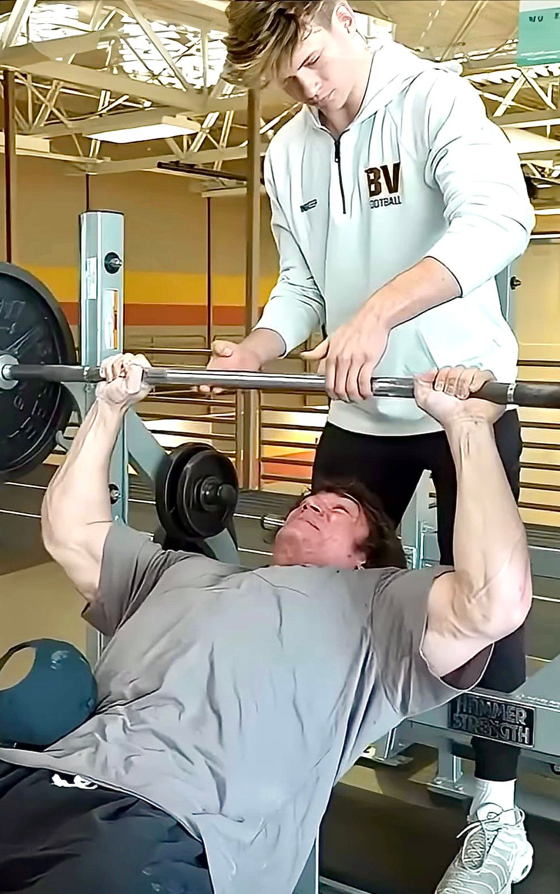

Buscador Rápido de Spotters
• ENTRENA SEGURO
Olvídate del miedo a fallar en el press de banca. Encuentra un spotter técnico que conozca tus límites.
• SUPERA TUS PRs
El progreso real ocurre cuando empujas tus barras al máximo. Con asistencia, el fallo es solo un dato más.
• ECOSISTEMA LOCAL
Conectá con atletas de tu misma zona y compartí la cultura del hierro en los templos de entrenamiento.